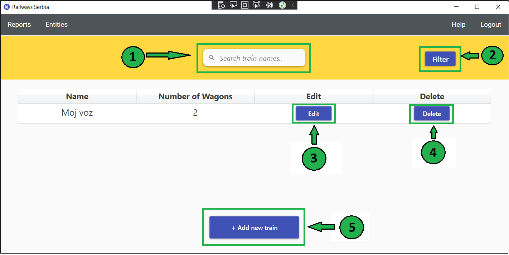

On this page you can search for trains and select one which you want to change or delete. You can also add a new train here. Initially, all trains in the system are displayed. If you want to find specific train, you can first enter name or part of the train's name.

Start typing in Search train names.. field to search for trains.
You can click on one of the suggested options to choose it.
Click on the Filter button to display trains whoose name contains entered word.
Now you will see the list of trains that satisfied search criteria. In each table row, you can click button Edit if you want to change the train. Then, new window for train editing will be opened.
If you want to delete choosen train, you can click button Delete. You will receive message about operation's success.
If you want to add new train, click + Add new train button on the bottom of the page. Then, new window for train creating will be opened.